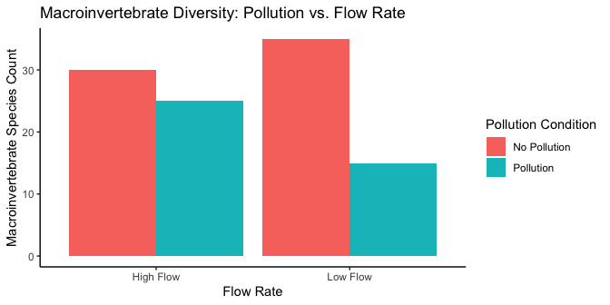

10 Factorial ANOVA
In environmental science, things are rarely simple. Factors like climate, soil type, and water availability all work together, affecting ecosystems in ways that aren’t always straightforward. That’s where factorial designs come in handy. They help us understand how different factors interact with each other.
So far, we’ve mostly looked at situations where we change one thing at a time and see what happens. But in real-world ecosystems or when studying climate interactions, there are usually many things changing at once. Factorial designs allow us to study these complex situations more effectively. They help us see not just what each factor does on its own, but also how they influence each other when they’re all at play together.
Imagine an investigation into the growth rates of a particular plant species. The dependent variable here would be the growth rate, while the independent variables could range from soil pH to sunlight exposure. In environmental factorial designs, each independent variable, with their respective levels, weaves into a tapestry of possible outcomes, allowing us to observe not just isolated effects, but the symphony of interactions.
Let’s explore some factorial design examples tailored to our environmental inquiries:
- 1 IV (two levels)
A t-test would suffice here, as we are dealing with just two levels of our independent variable.
Soil pH (Acidic vs. Neutral): How does soil pH affect plant growth? We have one IV (soil pH), with two levels (Acidic vs. Neutral).
Sunlight Exposure (Full Sun vs. Partial Shade): Does the amount of sunlight influence plant growth rates? Here, there’s one IV (sunlight exposure), with two levels (Full Sun vs. Partial Shade).
- 1 IV (three levels):
An ANOVA is appropriate here, given the variable has more than two levels.
Water Availability (Low, Medium, High): How does varying water availability impact plant growth? Our single IV (water availability) has three levels (Low, Medium, High).
Fertilizer Type (No fertilizer, Organic, Synthetic): What’s the effect of different fertilizer types on plant growth? One IV (fertilizer type) has three levels.
- 2 IVs: IV1 (two levels), IV2 (two levels)
We would employ a factorial ANOVA for this design, which we haven’t discussed yet.
- IV1 (Soil pH: Acidic vs. Neutral); IV2 (Water Availability: Low vs. High): How do soil pH and water availability together affect plant growth? Here, we have two IVs—soil pH and water availability. Each IV has two levels, leading to a 2x2 Factorial Design. This type of design is fully crossed; each level of one IV is paired with each level of the other IV to observe the combined effect on growth rates.
OK, let’s stop here for the moment. The first two designs both had one IV. The third design shows an example of a design with 2 IVs (soil pH and water availability), each with two levels. This is called a 2x2 Factorial Design. It is called a factorial design, because the levels of each independent variable are fully crossed. This means that first each level of one IV, the levels of the other IV are also manipulated.
10.1 Factorial basics
10.1.1 2x2 Designs
We’ve just started talking about a 2x2 Factorial design. We said this means the IVs are crossed. To illustrate this, take a look at Figure 10.1. We show an abstract version and a concrete version using soil pH and water availability as the two IVs, each with two levels in the design:
- IV1: Soil Type (Clay vs. Loam)
- IV2: Drought Condition (Yes vs. No)
Each combination of soil type and drought condition creates a unique environment for the plants, leading to four distinct scenarios to measure growth rates. So, we have 2 IVs, each with 2 levels, for a total of 4 conditions. This is why we call it a 2x2 design. 2x2 = 4. The notation tells us how to calculate the total number of conditions.
10.1.2 Factorial Notation
Anytime all of the levels of each IV in a design are fully crossed, so that they all occur for each level of every other IV, we can say the design is a fully factorial design.
Our notation system succinctly encapsulates the structure of factorial designs. Each IV gets a number representing its levels. Here are a few examples:
2x2: Two IVs, each with two levels, yielding four unique conditions.
2x3: Two IVs, with the first having two levels and the second three, resulting in six conditions.
3x2: Similar to the 2x3, but the first IV has three levels, and the second has two, also giving us six conditions.
4x4: Two IVs, each with four levels, resulting in sixteen conditions.
Expanding on our designs, a 2x3 factorial design could investigate the impact of two soil types across three different levels of water availability, equating to six unique conditions to analyze plant growth.
10.2 Purpose of Factorial Designs
Factorial designs let us ask nuanced questions about ecological phenomena. By manipulating multiple variables simultaneously, we gain insights into how different environmental factors might interact to influence a specific outcome, like plant growth or species distribution.
10.2.1 Factorials manipulate an effect of interest
Factorial designs enable researchers to sift through multiple layers of influence to grasp the broader picture. Complicated? Certainly, but it’s complexity that mirrors the real world where multiple factors often come into play simultaneously.
Let’s make sense of this by contemplating a multifaceted environmental study. Imagine we’re environmental scientists, eager to measure the effects of various pollutants on aquatic life. Here’s what we could do:
Choose a bioindicator: Our subjects are the varied aquatic macroinvertebrates, whose species diversity is a critical measure of water health—our dependent variable.
Identify impactful variables: We’ve identified the usual suspect – excess Nutrient-loaded agricultural runoff (Pollutant A), notorious for depleting oxygen and threatening our aquatic buddies. We’ll add this to our macroinvertebrates’ environment and observe the ripple effects on their diversity, using a pristine control (No Pollutant) for comparison.
Measure the impact: We’ll examine the richness and variety of macroinvertebrate species when exposed to each type of pollutant.
Detect the variation: Variations in macroinvertebrate diversity will illuminate the ‘Pollution effect’. The impact of pollutaiton on macroinvertebrate diversity.
The proof is in the visuals. We aim to contrast macroinvertebrate diversity in the shadow of Pollutant A with a pollutant-free scenario. Figure 10.2 shows how the data might look.

Behold! The macroinvertebrate lineup takes a hit from both pollutants, but they really don’t like the industrial waste after-party. In general, it is very common to use the word effect to refer to the differences caused by the manipulation. This is what we could call the “Pollution effect”.
10.2.2 Manipulating the Pollution effect
This is where factorial designs come in to play. We’ve already pinpointed a ‘Pollution effect’—the change in macroinvertebrate biodiversity when pollutants enter their habitat. This effect serves as our guide, leading us to ask: Where does pollution strike the hardest? What conditions exacerbate its harmful impact?
One possible lever for controlling this Pollution effect could be the timing of fertilizer application, reducing runoff by strategic scheduling post-rainfall. Cover cropping might also act as a shield, protecting our waters from nutrient excess. But now, we introduce a new player: flow rate. Will high flow rate reduce impacts of pollution, since the pollution will scoot on out of there? Or, paradoxically, could it exacerbate the issue, hastening the spread of pollutants that might otherwise degrade if left undisturbed?
Our question evolves: Does flow rate influence the Pollution Effect? We hypothesize that a higher flow rate might reduce the observable Pollution Effect compared to a more stagnant, low flow environment. If our theory holds water, the results could flow out like the data in Figure 10.3.
In this graph, we maintain consistency by placing the Pollution conditions on the x-axis.The bars represent the average macroinvertebrate diversity for each combination of flow and pollution conditions, with colors distinguishing the flow rates. But, it’s not as helpful as it could be. We can try to interpret this graph, but ?fig-10flowB plots the same data in a way that makes it easier to see what we are talking about.

Here, the x-axis represents the Flow Rate, with the color of the bars indicating the Pollution condition. This graph layout simplifies the comparison of the Pollution effect within each Flow Rate condition, making it easier to discern the interaction between these two factors.
Low-Flow condition: In the low flow condition, our macroinvertebrates were observed in both polluted and unpolluted waters. This mirrors the baseline scenario of our study. Consistently with our predictions, the graph would likely show a significant difference: a higher species count in unpolluted waters compared to polluted ones. Thus, we’d observe a Pollution effect, with a specific difference in species count illustrating the impact of pollution under low flow conditions.
Flow condition: In the high flow condition, the macroinvertebrates also faced both polluted and unpolluted environments. However, the dynamic nature of high flow was hypothesized to influence their response to pollution. The expectation was that the swift current might diminish the observable Pollution effect by dispersing pollutants more effectively. If the graph supports our hypothesis, we’d see a smaller difference in species count between the polluted and unpolluted conditions under high flow, indicating a lessened Pollution effect.
Should our research validate these predictions, we could infer that flow rate does indeed modulate the Pollution effect. In a low flow environment, the Pollution effect might be pronounced, as observed by the larger difference in species counts. Conversely, in a high flow scenario, the effect diminishes, with the difference in biodiversity less stark. Therefore, the manipulation of flow rate could potentially alter the Pollution effect by a quantifiable margin, underscored by the variation in species counts between the two flow conditions.v
This is our description of why factorial designs are so useful. They allow researchers to find out what kinds of manipulations can cause changes in the effects they measure. In our environmental study, for instance, we’ve measured the Pollution effect on macroinvertebrate biodiversity. Then, we introduced the variable of flow rate to see if and how it might alter this effect. If our goal is to untangle the web of ecological dynamics, we’d need to delve into the mechanisms by which flow rate could influence pollutant dispersion and, subsequently, biodiversity. We have the initial evidence suggesting that flow rate can indeed sway the Pollution effect. The next step is to craft hypotheses on the nature of this influence—perhaps proposing that faster flows dilute pollutants more effectively, thus mitigating their negative impact on biodiversity. These hypotheses then become the basis for further experiments, designed to test their validity and expand our understanding of these complex environmental interactions.
10.3 Graphing the means
In our example above we showed you two bar graphs of the very same means for our 2x2 design. Even though the graphs plot identical means, they look different, so they are more or less easy to interpret by looking at them. Results from 2x2 designs are also often plotted with line graphs. Those look different too. There are four different graphs in Figure 10.5, using bars and lines to plot the very same means from before. We are showing you this so that you realize how you graph your data matters because it makes it more or less easy for people to understand the results. Also, how the data is plotted matters for what you need to look at to interpret the results.
10.4 Knowing what you want to find out
When you conduct a design with more than one IV, you get more means to look at. As a result, there are more kinds of questions that you can ask of the data. Sometimes it turns out that the questions that you can ask, are not the ones that you want to ask, or have an interest in asking. Because you ran the design with more than one IV, you have the opportunity to ask these kinds of extra questions.
What kinds of extra questions? Let’s keep going with our Pollution effect experiment. We have the first IV where we manipulated Pollution. So, we could find the overall means in spot-the difference for the Pollution vs. no-Pollution conditions (that’s two means). The second IV was Flow. We could find the overall means in spot-the-difference performance for the Flow vs. no-Flow conditions (that’s two more means). We could do what we already did, and look at the means for each combination, that is the mean for Pollution/Flow, Pollution/no-Flow, no-Pollution/Flow, and no-Pollution/no-Flow (that’s four more means, if you’re counting).
There’s even more. We could look at the mean Pollution effect (the difference between pollution and no pollution) for the low flow condition, and the mean Pollution effect for the high flow condition (that’s two more).
Figure 10.6 shows multiple ways of looking at the means across four panels.
The top left panel of our graph offers a snapshot of macroinvertebrate populations under different environmental scenarios. To assess the impact of Pollution, we look at the differences in species counts between the unpolluted (aqua bar) and polluted (red bar) conditions within both High Flow and Low Flow contexts. This visual comparison sheds light on how Pollution affects species diversity across varying flow rates.
The top right panel, however, does not delve into the effects of Flow. Rather, it showcases the general impact of Pollution on species diversity, known as the main effect of Pollution. This is a direct comparison of the number of species found in unpolluted versus polluted waters, without the flow rate being a factor.
The bottom left panel similarly isolates another variable, focusing solely on the main effect of Flow. It contrasts species diversity in High Flow versus Low Flow conditions, without the influence of Pollution being considered.
It’s in the bottom right panel that we explore the interaction between Flow and Pollution. Here, the y-axis quantifies the Pollution effect, reflecting the change in species diversity from unpolluted to polluted conditions. In the Low-Flow scenario, there’s a substantial drop (a difference of 20, from 35 to 15) when Pollution is introduced. In contrast, under High Flow, the introduction of Pollution results in a smaller decrease (a difference of -5, from 30 to 25). The disparity between these two outcomes (20 in Low Flow versus -5 in High Flow) indicates that Flow significantly moderates the effect of Pollution. This differential effect, where the influence of one factor (Pollution) varies according to the level of another (Flow), is what we define as an interaction.
Pro tip
Before you start your environmental detective work, know what you’re looking for. What’s your question? What clues (means) are relevant? Keep your eyes on the prize, and don’t get lost in the sea of data!
10.5 Simplified Analysis of 2x2 Repeated Measures Design
In discussions of factorial designs, the concept of Factorial ANOVAs often comes up. These are complex statistical tests that we’ll explore shortly. However, before we delve into Factorial ANOVAs, let’s look at how to analyze a 2x2 repeated measures design using paired-samples t-tests. This approach is less common but yields results comparable to those from an ANOVA.
Understanding ANOVA can be challenging, and it gets even trickier with factorial designs. To ease into this complexity, we’ll start with t-tests to demonstrate the principles behind Factorial ANOVA. Conducting t-tests requires precise comparisons, which will help you grasp what you’re seeking to understand from factorial designs. Once you’re clear on your research questions, you can apply ANOVA to uncover the answers and know exactly what to look for in the results. This step-by-step approach makes learning a more enjoyable journey!
First, let’s define two key terms: main effects and interactions. In any factorial design, you have the chance to analyze these elements. The number of main effects and interactions you can investigate depends on the number of independent variables (IVs) in your design.
10.5.1 Main Effects
A main effect represents the average difference associated with a single independent variable (IV). There’s one main effect for each IV. In a 2x2 design, which includes two IVs, there are two main effects. For instance, we might have one main effect for Pollution and another for Flow. A significant main effect suggests that the differences observed are not likely due to random chance.
In a 2x2x2 design, you’d evaluate three main effects, corresponding to each IV. A 3x3x3 design, despite having more levels, still involves three IVs, so you’d again have three main effects.
10.5.2 Interaction
The concept of interaction can be perplexing in factorial designs. Simply put, an interaction occurs when the effect of one IV on the outcome is influenced by another IV. For example, we observed that the presence of Flow affected the magnitude of the Pollution effect. The Pollution effect was more pronounced without Flow and less so with Flow, indicating an interaction.
Another way to think about interactions is to consider them as the difference between differences. If the Pollution effect (the difference in outcomes between polluted and unpolluted conditions) changes when we introduce different Flow conditions, we’re observing an interaction. This concept can seem complex, but don’t worry—we’ll go through more examples to clarify it.
The number of possible interactions in a design is tied to the number of IVs. A 2x2 design has one interaction: the combined effect of the two IVs. This single interaction examines whether the impact of one IV varies across the levels of the other IV. In designs with more than two IVs, the potential for interactions increases. For example, a design with three IVs (A, B, and C) would have three 2-way interactions (AB, AC, and BC) and one 3-way interaction (ABC).
10.5.3 Looking at the data
Understanding our analysis begins with a clear view of the data. Consider our hypothetical study on attention, with five experimental tanks that each experience all conditions, making this a fully repeated-measures design. The dataset might look something like this:
| subject | A | B | C | D |
|---|---|---|---|---|
| 1 | 10 | 5 | 12 | 9 |
| 2 | 8 | 4 | 13 | 8 |
| 3 | 11 | 3 | 14 | 10 |
| 4 | 9 | 4 | 11 | 11 |
| 5 | 10 | 2 | 13 | 12 |
10.5.4 Main effect of Pollution
To assess the main effect of Pollution, we compare the mean scores across the no-Pollution and Pollution conditions, regardless of the Flow conditions.
| subject | A | B | C | D | Mean_No_Pollution | Mean_Pollution | Pollution_Effect |
|---|---|---|---|---|---|---|---|
| 1 | 10 | 5 | 12 | 9 | 11 | 7 | 4 |
| 2 | 8 | 4 | 13 | 8 | 10.5 | 6 | 4.5 |
| 3 | 11 | 3 | 14 | 10 | 12.5 | 6.5 | 6 |
| 4 | 9 | 4 | 11 | 11 | 10 | 7.5 | 2.5 |
| 5 | 10 | 2 | 13 | 12 | 11.5 | 7 | 4.5 |
| Means | 11.1 | 6.8 | 4.3 |
The mean score in the no-Pollution condition is 11.1, while in the Pollution condition, it is 6.8. The main effect of Pollution, therefore, is 4.3, which represents the difference between these two means.
To determine if this main effect of Pollution is statistically significant and not due to chance, we can perform a paired samples t-test comparing the mean no-Pollution scores to the mean Pollution scores for each subject (tank). Alternatively, a one-sample t-test on the Pollution effect scores, testing against a mean difference of zero, would yield the same conclusion.
For the paired samples t-test, we compare the mean scores of the no-Pollution condition to the Pollution condition for each tank. We use the Mean_No_Pollution and Mean_Pollution columns from our data frame:
#>
#> Welch Two Sample t-test
#>
#> data: as.numeric(fake_data$Mean_No_Pollution[1:5]) and as.numeric(fake_data$Mean_Pollution[1:5], paired = TRUE)
#> t = 8.6, df = 6.502, p-value = 8.726e-05
#> alternative hypothesis: true difference in means is not equal to 0
#> 95 percent confidence interval:
#> 3.099079 5.500921
#> sample estimates:
#> mean of x mean of y
#> 11.1 6.8For the one-sample t-test, we test whether the mean difference (Pollution effect) is significantly different from zero:
#>
#> One Sample t-test
#>
#> data: as.numeric(fake_data$Pollution_Effect[1:5])
#> t = 7.6615, df = 4, p-value = 0.00156
#> alternative hypothesis: true mean is not equal to 0
#> 95 percent confidence interval:
#> 2.741724 5.858276
#> sample estimates:
#> mean of x
#> 4.3If we were to write-up our results for the main effect of Pollution we could say something like this:
The main effect of Pollution was significant, \(t\)(4) = 7.66, \(p\) = 0.001. The mean biodiversity was higher in the no-Pollution condition (M = 11.1) than the Pollution condition (M = 6.8).
10.5.5 Main effect of Flow
The main effect of Flow compares the overall means for all scores in the no-Flow and Flow conditions, collapsing over the Flow conditions.
The yellow columns show the no-Flow scores for each subject (tank). The blue columns show the Flow scores for each subject.
The overall means for for each subject, for the two Flow conditions are shown to the right. For example, subject 1 had a 10 and 5 in the no-Flow condition, so their mean is 7.5.
We are interested in the main effect of Flow. This is the difference between the AB column (average of subject scores in the no-Flow condition) and the CD column (average of the subject scores in the Flow condition). These differences for each subject are shown in the last green column. The overall means, averaging over subjects are in the bottom green row.
| subject | A | B | C | D | AB | CD | CD.minus.AB |
|---|---|---|---|---|---|---|---|
| 1 | 10 | 5 | 12 | 9 | 7.5 | 10.5 | 3 |
| 2 | 8 | 4 | 13 | 8 | 6 | 10.5 | 4.5 |
| 3 | 11 | 3 | 14 | 10 | 7 | 12 | 5 |
| 4 | 9 | 4 | 11 | 11 | 6.5 | 11 | 4.5 |
| 5 | 10 | 2 | 13 | 12 | 6 | 12.5 | 6.5 |
| Means | 6.6 | 11.3 | 4.7 |
Just looking at the means, we can see there was a main effect of Flow. The mean number of species was 11.3 in the Flow condition, and 6.6 in the no-Flow condition. So, the size of the main effect of Flow was 4.7.
Is a difference of this size likely o unlikely due to chance? We could conduct a paired-samples \(t\)-test on the AB vs. CD means, or a one-sample \(t\)-test on the difference scores. They both give the same answer:
Here’s the paired samples version:
#>
#> Paired t-test
#>
#> data: CD and AB
#> t = 8.3742, df = 4, p-value = 0.001112
#> alternative hypothesis: true mean difference is not equal to 0
#> 95 percent confidence interval:
#> 3.141724 6.258276
#> sample estimates:
#> mean difference
#> 4.7Here’s the one sample version:
#>
#> One Sample t-test
#>
#> data: CD - AB
#> t = 8.3742, df = 4, p-value = 0.001112
#> alternative hypothesis: true mean is not equal to 0
#> 95 percent confidence interval:
#> 3.141724 6.258276
#> sample estimates:
#> mean of x
#> 4.7If we were to write-up our results for the main effect of Flow we could say something like this:
The main effect of Flow was significant, t(4) = 8.37, p = 0.001. The mean number of species was higher in the Flow condition (M = 11.3) than the no-Flow condition (M = 6.6).
10.5.6 Interaction between Pollution and Flow
Now we are ready to look at the interaction. Remember, the whole point of this fake study was what? Can you remember?
Here’s a reminder. We wanted to know if giving Flows versus not would change the size of the Pollution effect.
Notice, neither the main effect of Pollution, or the main effect of Flow, which we just went through the process of computing, answers this question.
In order to answer the question we need to do two things. First, compute Pollution effect for each subject when they were in the no-Flow condition. Second, compute the Pollution effect for each subject when they were in the Flow condition.
Then, we can compare the two Pollution effects and see if they are different. The comparison between the two Pollution effects is what we call the interaction effect. Remember, this is a difference between two difference scores. We first get the difference scores for the Pollution effects in the no-Flow and Flow conditions. Then we find the difference scores between the two Pollution effects. This difference of differences is the interaction effect (green column in the table)
| subject | A | B | C | D | A-B | C-D | (A-B)-(C-D) |
|---|---|---|---|---|---|---|---|
| 1 | 10 | 5 | 12 | 9 | 5 | 3 | 2 |
| 2 | 8 | 4 | 13 | 8 | 4 | 5 | -1 |
| 3 | 11 | 3 | 14 | 10 | 8 | 4 | 4 |
| 4 | 9 | 4 | 11 | 11 | 5 | 0 | 5 |
| 5 | 10 | 2 | 13 | 12 | 8 | 1 | 7 |
| Means | 6 | 2.6 | 3.4 |
The mean Pollution effects in the no-Flow (6) and Flow (2.6) conditions were different. This difference is the interaction effect. The size of the interaction effect was 3.4.
How can we test whether the interaction effect was likely or unlikely due to chance? We could run another paired-sample \(t\)-test between the two Pollution effect measures for each subject, or a one sample \(t\)-test on the green column (representing the difference between the differences). Both of these \(t\)-tests will give the same results:
Here’s the paired samples version:
#>
#> Paired t-test
#>
#> data: A_B and C_D
#> t = 2.493, df = 4, p-value = 0.06727
#> alternative hypothesis: true mean difference is not equal to 0
#> 95 percent confidence interval:
#> -0.3865663 7.1865663
#> sample estimates:
#> mean difference
#> 3.4Here’s the one sample version:
#>
#> One Sample t-test
#>
#> data: A_B - C_D
#> t = 2.493, df = 4, p-value = 0.06727
#> alternative hypothesis: true mean is not equal to 0
#> 95 percent confidence interval:
#> -0.3865663 7.1865663
#> sample estimates:
#> mean of x
#> 3.4Oh look, the interaction was not significant. At least, if we had set our alpha criterion to 0.05, it would not have met that criteria. We could write up the results like this. The two-way interaction between between Pollution and Flow was not significant, \(t\)(4) = 2.493, \(p\) = 0.067.
Often times when a result is “not significant” according to the alpha criteria, the pattern among the means is not described further. One reason for this practice is that the researcher is treating the means as if they are not different (because there was an above alpha probability that the observed differences were due to chance). If they are not different, then there is no pattern to report.
There are differences in opinion among reasonable and expert statisticians on what should or should not be reported. Let’s say we wanted to report the observed mean differences, we would write something like this:
The two-way interaction between between Pollution and Flow was not significant, t(4) = 2.493, p = 0.067. The mean Pollution effect in the no-Flow condition was 6 and the mean Pollution effect in the Flow condition was 2.6.
10.5.7 Writing it all up
We have completed an analysis of a 2x2 repeated measures design using paired-samples \(t\)-tests. Here is what a full write-up of the results could look like.
The main effect of Pollution was significant, \(t\)(4) = 7.66, \(p\) = 0.001. The mean number of species was higher in the no-Pollution condition (M = 11.1) than the Pollution condition (M = 6.8).
The main effect of Flow was significant, \(t\)(4) = 8.37, \(p\) = 0.001. The mean number of species was higher in the Flow condition (M = 11.3) than the no-Flow condition (M = 6.6).
The two-way interaction between between Pollution and Flow was not significant, \(t\)(4) = 2.493, \(p\) = 0.067. The mean Pollution effect in the no-Flow condition was 6 and the mean Pollution effect in the Flow condition was 2.6.
Interim Summary. We went through this exercise to show you how to break up the data into individual comparisons of interest. Generally speaking, a 2x2 repeated measures design would not be analyzed with three paired-samples \(t\)-test. This is because it is more convenient to use the repeated measures ANOVA for this task. We will do this in a moment to show you that they give the same results. And, by the same results, what we will show is that the \(p\)-values for each main effect, and the interaction, are the same. The ANOVA will give us \(F\)-values rather than \(t\) values. It turns out that in this situation, the \(F\)-values are related to the \(t\) values. In fact, \(t^2 = F\).
10.5.8 2x2 Repeated Measures ANOVA
We just showed how a 2x2 repeated measures design can be analyzed using paired-sampled \(t\)-tests. We broke up the analysis into three parts. The main effect for Pollution, the main effect for Flow, and the 2-way interaction between Pollution and Flow. We claimed the results of the paired-samples \(t\)-test analysis would mirror what we would find if we conducted the analysis using an ANOVA. Let’s show that the results are the same. Here are the results from the 2x2 repeated-measures ANOVA, using the aov function in R.
| Df | Sum Sq | Mean Sq | F value | Pr(>F) | |
|---|---|---|---|---|---|
| Residuals | 4 | 3.70 | 0.925 | NA | NA |
| Pollution | 1 | 92.45 | 92.450 | 58.698413 | 0.0015600 |
| Residuals1 | 4 | 6.30 | 1.575 | NA | NA |
| Flow | 1 | 110.45 | 110.450 | 70.126984 | 0.0011122 |
| Residuals2 | 4 | 6.30 | 1.575 | NA | NA |
| Pollution:Flow | 1 | 14.45 | 14.450 | 6.215054 | 0.0672681 |
| Residuals | 4 | 9.30 | 2.325 | NA | NA |
Let’s compare these results with the paired-samples \(t\)-tests.
Main effect of Pollution: Using the paired samples \(t\)-test, we found \(t\)(4) =7.6615, \(p\)=0.00156. Using the ANOVA we found, \(F\)(1,4) = 58.69, \(p\)=0.00156. See, the \(p\)-values are the same, and \(t^2 = 7.6615^2 = 58.69 = F\).
Main effect of Flow: Using the paired samples \(t\)-test, we found \(t\)(4) =8.3742, \(p\)=0.001112. Using the ANOVA we found, \(F\)(1,4) = 70.126, \(p\)=0.001112. See, the \(p\)-values are the same, and \(t^2 = 8.3742^2 = 70.12 = F\).
Interaction effect: Using the paired samples \(t\)-test, we found \(t\)(4) =2.493, \(p\)=0.06727. Using the ANOVA we found, \(F\)(1,4) = 6.215, \(p\)=0.06727. See, the \(p\)-values are the same, and \(t^2 = 2.493^2 = 6.215 = F\).
There you have it. The results from a 2x2 repeated measures ANOVA are the same as you would get if you used paired-samples \(t\)-tests for the main effects and interactions.
10.6 2x2 Between-subjects ANOVA
You must be wondering how to calculate a 2x2 ANOVA. We haven’t discussed this yet. We’ve only shown you that you don’t have to do it when the design is a 2x2 repeated measures design (note this is a special case).
We are now going to work through some examples of calculating the ANOVA table for 2x2 designs. We will start with the between-subjects ANOVA for 2x2 designs. We do essentially the same thing that we did before (in the other ANOVAs), and the only new thing is to show how to compute the interaction effect.
Remember the logic of the ANOVA is to partition the variance into different parts. The SS formula for the between-subjects 2x2 ANOVA looks like this:
\(SS_\text{Total} = SS_\text{Effect IV1} + SS_\text{Effect IV2} + SS_\text{Effect IV1xIV2} + SS_\text{Error}\)
In the following sections we use tables to show the calculation of each SS. We use the same example as before with the exception that we are turning this into a between-subjects design. There are now 5 different subjects in each condition, for a total of 20 subjects. As a result, we remove the subjects column.
10.6.1 SS Total
We calculate the grand mean (mean of all of the score). Then, we calculate the differences between each score and the grand mean. We square the difference scores, and sum them up. That is \(SS_\text{Total}\), reported in the bottom yellow row.
| A | B | C | D | A-GrandM | B-GrandM | C-GrandM | D-GrandM | (A-GrandM)^2 | (B-GrandM)^2 | (C-GrandM)^2 | (D-GrandM)^2 | |
|---|---|---|---|---|---|---|---|---|---|---|---|---|
| 10 | 5 | 12 | 9 | 1.05 | -3.95 | 3.05 | 0.05 | 1.1025 | 15.6025 | 9.3025 | 0.0025 | |
| 8 | 4 | 13 | 8 | -0.95 | -4.95 | 4.05 | -0.95 | 0.9025 | 24.5025 | 16.4025 | 0.9025 | |
| 11 | 3 | 14 | 10 | 2.05 | -5.95 | 5.05 | 1.05 | 4.2025 | 35.4025 | 25.5025 | 1.1025 | |
| 9 | 4 | 11 | 11 | 0.05 | -4.95 | 2.05 | 2.05 | 0.0025 | 24.5025 | 4.2025 | 4.2025 | |
| 10 | 2 | 13 | 12 | 1.05 | -6.95 | 4.05 | 3.05 | 1.1025 | 48.3025 | 16.4025 | 9.3025 | |
| Means | 9.6 | 3.6 | 12.6 | 10 | ||||||||
| Grand Mean | 8.95 | |||||||||||
| sums | Sums | 7.3125 | 148.3125 | 71.8125 | 15.5125 | |||||||
| SS Total | SS Total | 242.95 |
10.6.2 SS Pollution
We need to compute the SS for the main effect for Pollution. We calculate the grand mean (mean of all of the scores). Then, we calculate the means for the two Pollution conditions. Then we treat each score as if it was the mean for it’s respective Pollution condition. We find the differences between each Pollution condition mean and the grand mean. Then we square the differences and sum them up. That is \(SS_\text{Pollution}\), reported in the bottom yellow row.
| A | B | C | D | NDM-GM A | DM-GM B | NDM-GM C | DM-GM D | (NDM-GM )^2 A | (DM-GM)^2 B | (NDM-GM)^2 C | (DM-GM)^2 D | |
|---|---|---|---|---|---|---|---|---|---|---|---|---|
| 10 | 5 | 12 | 9 | 2.15 | -2.15 | 2.15 | -2.15 | 4.6225 | 4.6225 | 4.6225 | 4.6225 | |
| 8 | 4 | 13 | 8 | 2.15 | -2.15 | 2.15 | -2.15 | 4.6225 | 4.6225 | 4.6225 | 4.6225 | |
| 11 | 3 | 14 | 10 | 2.15 | -2.15 | 2.15 | -2.15 | 4.6225 | 4.6225 | 4.6225 | 4.6225 | |
| 9 | 4 | 11 | 11 | 2.15 | -2.15 | 2.15 | -2.15 | 4.6225 | 4.6225 | 4.6225 | 4.6225 | |
| 10 | 2 | 13 | 12 | 2.15 | -2.15 | 2.15 | -2.15 | 4.6225 | 4.6225 | 4.6225 | 4.6225 | |
| Means | 9.6 | 3.6 | 12.6 | 10 | ||||||||
| Grand Mean | 8.95 | No Pollution | 11.1 | Pollution | 6.8 | |||||||
| sums | Sums | 23.1125 | 23.1125 | 23.1125 | 23.1125 | |||||||
| SS Pollution | SS Pollution | 92.45 |
These tables are a lot to look at! Notice here, that we first found the grand mean (8.95). Then we found the mean for all the scores in the no-Pollution condition (columns A and C), that was 11.1. All of the difference scores for the no-Pollution condition are 11.1-8.95 = 2.15. We also found the mean for the scores in the Pollution condition (columns B and D), that was 6.8. So, all of the difference scores are 6.8-8.95 = -2.15. Remember, means are the balancing point in the data, this is why the difference scores are +2.15 and -2.15. The grand mean 8.95 is in between the two condition means (11.1 and 6.8), by a difference of 2.15.
10.6.3 SS Flow
We need to compute the SS for the main effect for Flow. We calculate the grand mean (mean of all of the scores). Then, we calculate the means for the two Flow conditions. Then we treat each score as if it was the mean for it’s respective Flow condition. We find the differences between each Flow condition mean and the grand mean. Then we square the differences and sum them up. That is \(SS_\text{Flow}\), reported in the bottom yellow row.
| A | B | C | D | NRM-GM A | NRM-GM B | RM-GM C | RM-GM D | (NRM-GM )^2 A | (NRM-GM)^2 B | (RM-GM)^2 C | (RM-GM)^2 D | |
|---|---|---|---|---|---|---|---|---|---|---|---|---|
| 10 | 5 | 12 | 9 | -2.35 | -2.35 | 2.35 | 2.35 | 5.5225 | 5.5225 | 5.5225 | 5.5225 | |
| 8 | 4 | 13 | 8 | -2.35 | -2.35 | 2.35 | 2.35 | 5.5225 | 5.5225 | 5.5225 | 5.5225 | |
| 11 | 3 | 14 | 10 | -2.35 | -2.35 | 2.35 | 2.35 | 5.5225 | 5.5225 | 5.5225 | 5.5225 | |
| 9 | 4 | 11 | 11 | -2.35 | -2.35 | 2.35 | 2.35 | 5.5225 | 5.5225 | 5.5225 | 5.5225 | |
| 10 | 2 | 13 | 12 | -2.35 | -2.35 | 2.35 | 2.35 | 5.5225 | 5.5225 | 5.5225 | 5.5225 | |
| Means | 9.6 | 3.6 | 12.6 | 10 | ||||||||
| Grand Mean | 8.95 | Low Flow | 6.6 | High Flow | 11.3 | |||||||
| sums | Sums | 27.6125 | 27.6125 | 27.6125 | 27.6125 | |||||||
| SS Flow | SS Flow | 110.45 |
Now we treat each no-Flow score as the mean for the no-Flow condition (6.6), and subtract it from the grand mean (8.95), to get -2.35. Then, we treat each Flow score as the mean for the Flow condition (11.3), and subtract it from the grand mean (8.95), to get +2.35. Then we square the differences and sum them up.
10.6.4 SS Pollution by Flow
We need to compute the SS for the interaction effect between Pollution and Flow. This is the new thing that we do in an ANOVA with more than one IV. How do we calculate the variation explained by the interaction?
The heart of the question is something like this. Do the individual means for each of the four conditions do something a little bit different than the group means for both of the independent variables?
For example, consider the overall mean for all of the scores in the Low Flow group, we found that to be 6.6 Now, was the mean for each no-Flow group in the whole design a 6.6? For example, in the no-Pollution group, was the mean for column A (the no-Flow condition in that group) also 6.6? The answer is no, it was 9.6. How about the Pollution group? Was the mean for the Flow condition in the Pollution group (column B) 6.6? No, it was 3.6. The mean of 9.6 and 3.6 is 6.6. If there was no hint of an interaction, we would expect that the means for the Flow condition in both levels of the Pollution group would be the same, they would both be 6.6. However, when there is an interaction, the means for the Flow group will depend on the levels of the group from another IV. In this case, it looks like there is an interaction because the means are different from 6.6, they are 9.6 and 3.6 for the no-Pollution and Pollution conditions. This is extra-variance that is not explained by the mean for the Flow condition. We want to capture this extra variance and sum it up. Then we will have measure of the portion of the variance that is due to the interaction between the Flow and Pollution conditions.
What we will do is this. We will find the four condition means. Then we will see how much additional variation they explain beyond the group means for Flow and Pollution. To do this we treat each score as the condition mean for that score. Then we subtract the mean for the Pollution group, and the mean for the Flow group, and then we add the grand mean. This gives us the unique variation that is due to the interaction. We could also say that we are subtracting each condition mean from the grand mean, and then adding back in the Pollution mean and the Flow mean, that would amount to the same thing, and perhaps make more sense.
Here is a formula to describe the process for each score:
\(\bar{X}_\text{condition} -\bar{X}_\text{IV1} - \bar{X}_\text{IV2} + \bar{X}_\text{Grand Mean}\)
Or we could write it this way:
\(\bar{X}_\text{condition} - \bar{X}_\text{Grand Mean} + \bar{X}_\text{IV1} + \bar{X}_\text{IV2}\)
When you look at the following table, we apply this formula to the calculation of each of the differences scores. We then square the difference scores, and sum them up to get \(SS_\text{Interaction}\), which is reported in the bottom yellow row.
| A | B | C | D | A-NP-LF+GM | B-P-LF+GM | C-NP-HF+GM | D-P-HF+GM | (A-NP-LF+GM)^2 A | (B-B-LF+GM)^2 B | (C-NP-HF+GM)^2 C | (D-P-HF+GM)^2 D | |
|---|---|---|---|---|---|---|---|---|---|---|---|---|
| 10 | 5 | 12 | 9 | 0.85 | -0.85 | -0.85 | 0.85 | 0.7225 | 0.7225 | 0.7225 | 0.7225 | |
| 8 | 4 | 13 | 8 | 0.85 | -0.85 | -0.85 | 0.85 | 0.7225 | 0.7225 | 0.7225 | 0.7225 | |
| 11 | 3 | 14 | 10 | 0.85 | -0.85 | -0.85 | 0.85 | 0.7225 | 0.7225 | 0.7225 | 0.7225 | |
| 9 | 4 | 11 | 11 | 0.85 | -0.85 | -0.85 | 0.85 | 0.7225 | 0.7225 | 0.7225 | 0.7225 | |
| 10 | 2 | 13 | 12 | 0.85 | -0.85 | -0.85 | 0.85 | 0.7225 | 0.7225 | 0.7225 | 0.7225 | |
| Means | 9.6 | 3.6 | 12.6 | 10 | ||||||||
| Grand Mean | 8.95 | |||||||||||
| sums | Sums | 3.6125 | 3.6125 | 3.6125 | 3.6125 | |||||||
| SS Interaction | SS Interaction | 14.45 |
10.6.5 SS Error
The last thing we need to find is the SS Error. We can solve for that because we found everything else in this formula:
\(SS_\text{Total} = SS_\text{Effect IV1} + SS_\text{Effect IV2} + SS_\text{Effect IV1xIV2} + SS_\text{Error}\)
Even though this textbook meant to explain things in a step by step way, we guess you are tired from watching us work out the 2x2 ANOVA by hand. You and me both, making these tables was a lot of work. We have already shown you how to compute the SS for error before, so we will not do the full example here. Instead, we solve for SS Error using the numbers we have already obtained.
$SS_ = SS_- SS_ - SS_ - SS_ $
$SS_ = 242.95 - 92.45 - 110.45 - 14.45 = 25.6 $
10.6.6 Check your work
We are going to skip the part where we divide the SSes by their dfs to find the MSEs so that we can compute the three \(F\)-values. Instead, if we have done the calculations of the \(SS\)es correctly, they should be same as what we would get if we used R to calculate the \(SS\)es. Let’s make R do the work, and then compare to check our work.
| Df | Sum Sq | Mean Sq | F value | Pr(>F) | |
|---|---|---|---|---|---|
| Pollution | 1 | 92.45 | 92.45 | 57.78125 | 0.0000011 |
| Flow | 1 | 110.45 | 110.45 | 69.03125 | 0.0000003 |
| Pollution:Flow | 1 | 14.45 | 14.45 | 9.03125 | 0.0083879 |
| Residuals | 16 | 25.60 | 1.60 | NA | NA |
A quick look through the column Sum Sq shows that we did our work by hand correctly. Congratulations to us! Note, this is not the same results as we had before with the repeated measures ANOVA. We conducted a between-subjects design, so we did not get to further partition the SS error into a part due to subject variation and a left-over part. We also gained degrees of freedom in the error term. It turns out with this specific set of data, we find p-values of less than 0.05 for all effects (main effects and the interaction, which was not less than 0.05 using the same data, but treating it as a repeated-measures design)
10.7 Fireside chat
Sometimes it’s good to get together around a fire and have a chat. Let’s pretend we’re sitting around a fire.
It’s been a long day. A long couple of weeks and months since we started this course on statistics. We just went through the most complicated things we have done so far. This is a long chapter. What should we do next?
Here’s a couple of options. We could work through, by hand, more and more ANOVAs. Do you want to do that? I don’t, making these tables isn’t too bad, but it takes a lot of time. It’s really good to see everything that we do laid bare in the table form a few times. We’ve done that already. It’s really good for you to attempt to calculate an ANOVA by hand at least once in your life. It builds character. It helps you know that you know what you are doing, and what the ANOVA is doing. We can’t make you do this, we can only make the suggestion. If we keep doing these by hand, it is not good for us, and it is not you doing them by hand. So, what are the other options.
The other options are to work at a slightly higher level. We will discuss some research designs, and the ANOVAs that are appropriate for their analysis. We will conduct the ANOVAs using R, and print out the ANOVA tables. This is what you do in the lab, and what most researchers do. They use software most of the time to make the computer do the work. Because of this, it is most important that you know what the software is doing. You can make mistakes when telling software what to do, so you need to be able to check the software’s work so you know when the software is giving you wrong answers. All of these skills are built up over time through the process of analyzing different data sets. So, for the remainder of our discussion on ANOVAs we stick to that higher level. No more monster tables of SSes. You are welcome.
10.8 Factorial summary
We have introduced you to factorial designs, which are simply designs with more than one IV. The special property of factorial designs is that all of the levels of each IV need to be crossed with the other IVs.
We showed you how to analyse a repeated measures 2x2 design with paired samples-tests, and what an ANOVA table would look like if you did this in R. We also went through, by hand, the task of calculating an ANOVA table for a 2x2 between subjects design.
The main point we want you take away is that factorial designs are extremely useful for determining things that cause effects to change. Generally a researcher measures an effect of interest (their IV 1). Then, they want to know what makes that effect get bigger or smaller. They want to exert experimental control over their effect. For example, they might have a theory that says doing X should make the effect bigger, but doing Y should make it smaller. They can test these theories using factorial designs, and manipulating X or Y as a second independent variable.
In a factorial design each IV will have it’s own main effect. Sometimes the main effect themselves are what the researcher is interested in measures. But more often, it is the interaction effect that is most relevant. The interaction can test whether the effect of IV1 changes between the levels of IV2. When it does, researchers can infer that their second manipulation (IV2) causes change in their effect of interest. These changes are then documented and used to test underlying causal theories about the effects of interest.